The feel
Analog horror casts you as the viewer of a sinister tape: a training video, a documentary or a children's programme, faked on a computer with grain, snow and a 4:3 frame.1 Much of the fear comes from the voice of authority: an even-keeled announcement that asks you to stay calm or follow an arbitrary protocol against a threat it only hints at.2 As the writer Sachin Hingoo puts it, there is "something deeply terrifying about someone telling you, unprompted, not to worry when you weren't even worried before".2
The low fidelity does practical work. Remy Abode, who makes Gemini Home Entertainment, says the format helps him "disguise choppy VFX shots underneath a layer of static",3 and Kris Straub thinks a CGI monster can never be as scary as what we invent in our own minds.4 Much of the story is read as on-screen text5,3 or heard as computerised text-to-speech,1 and Abode would rather let a scare sit with the viewer in silence than release it with a jump scare.3
- official
- after-hours
- low-res
- patient
- reassuring
- wrong
Where it comes from
Kris Straub's Candle Cove (2009) was told as forum posts by people half-remembering a nightmarish children's show from a local station in the 1970s,6 and Steven Chamberlain's found-footage short No Through Road began circulating on YouTube the same year.5 Straub started the YouTube series Local 58 in 2015,7 the first series to describe itself as analog horror; the phrase first appears in its 2017 video Station ID.8,7 CH/SS followed in 2016,9 then Gemini Home Entertainment in 2019,7 and The Mandela Catalogue in June 2021, whose creator names Local 58 and The Walten Files as his main inspirations.10 By 2023 the style had spread into indie games,11 among them Amanda the Adventurer.12
Core elements
Everyday broadcast formats
The videos imitate training tapes, documentaries and children's television,1 or public service announcements and emergency broadcasts.2 Something plausible sits beside something impossible, and usually nobody on the tape reacts.13
Calm official narration
Public service announcements urge you to remain calm while subtle cues raise the anxiety.8 The voice can belong to the government, a hijacker or a car's GPS, and its authority is what makes it unsettling.2 In The Mandela Catalogue, a training video for 911 operators later orders its trainees to leave callers for dead.10
Hijacked signals and emergency alerts
Most analog horror footage is corrupted or outright hijacked, by something familiar like the Emergency Broadcast System or by an entity taking control.14 Its world-ending threats explain why emergency alerts turn up so often, from television bulletins to air-raid sirens.7
Digitally faked tape damage
None of it needs real analogue equipment: the grain, noise, snow and shudder are fabricated digitally1 to recreate a period with modern editing.13 The look is anchored in the 1960s to the 1990s,14 and a video's look and coherence often decay as it goes on.15
Few or no characters
Analog horror has few characters, if any, which makes the viewer one.14 Acting is rare and often replaced by computerised text-to-speech.1 Straub thinks putting a name or face to the force behind Candle Cove would spoil it, because the story works by being "brief and vague and interrupted".4
Hidden clues for viewers
The meaning is left vague on purpose, so viewers interpret it, theorise and share what they find.14 A good series disorients while breadcrumbing clues to stretch the mystery out,8 and a shape dismissed as a glitch in the static can later resolve into the monster.9
How to do it
Choose the format and period
Choose one kind of tape, such as a training video, a documentary or a children's programme,1 from the 1960s to the 1990s, the period the look is anchored in.14 The creator of CH/SS studied old videos and recordings from the 1980s and 1990s when choosing the look.9 Ground it in real places: for Candle Cove, Straub looked up the call letters of a TV station in that part of West Virginia and the names of nearby towns.4
Collect stock footage and sound
Analog horror leans on existing footage and sound, often royalty-free stock, and on motion graphics templates, so very little has to be filmed.14 Remy Abode began with free stock footage, then filmed his own locations for more control.3 The style is cheap to make: the creator of CH/SS says you can emulate it without any paid add-ons or programs.9
Set a 4:3 frame at 480 lines
Work in 4:3, the shape of older televisions,1 at 480 lines, the vertical resolution of NTSC video.16 Keep all text at least 10 percent in from every edge: that is the title-safe area, which broadcasters used because picture tubes cropped the edges of the image.17
Write the script as an official notice
Keep the tone even and official: ask viewers to stay calm or follow an arbitrary protocol, and only hint at the threat.2 Start tame and mundane and get steadily scarier,14 and plant small impossibilities, like the mental health conference in CH/SS that is advertised for 31 November.9
Add tape and signal damage
Use an effect that models how NTSC transmission and VHS encoding work, rather than one that lays colour tables and overlays on top.18 NTSC has only 480 lines, so apply the effect to a 480-line picture before anything scales it up; if your editor scales the clip first, put it on a timeline that matches the clip's resolution.16 Keep glitches subtle, because VHS filters and blackout screens lose their impact through overuse,13 and let the picture decay further as the story goes on.15
Use easy-listening music
Set easy-listening music against horrible images, like the music on a technical difficulties slate, and skip a film score unless the music would really be playing.14 Gemini Home Entertainment cuts emergency alerts into a video about the solar system that plays relaxing, elevator-style music,7 and Abode takes almost all his tracks from old 1980s and 1990s albums.3 Bend them with echo, a sticking tape or shifts in speed and pitch,13 or run them through a tape emulation effect for realistic VHS audio.19
Justify the tape format in games
A VHS filter laid over a game raises the question of why it looks like a tape at all, while a believable object, such as a lost PC game from the late 1980s or 1990s, makes its glitches all the more convincing.11 Amanda the Adventurer plays its tapes on a TV in an attic, where setting the dials of a toy oven changes what happens in the show's kitchen.12 Home Safety Hotline turns the whole game into a 1990s desktop with a CRT filter and filtered phone voices.20
Cheat sheet
Do
- Use real local detail. Call letters and the names of nearby towns lent Candle Cove a little verisimilitude.4
- Give the tape a believable route to the viewer, like a home tape someone digitised and uploaded.11
- Start mundane, get steadily worse, and end when things are at their worst.14
- Hide the strange inside the image, so it is hard to spot at first.13
- Build tension and let it sit. Alex Kister thinks tension-building is very underused in the genre.10
Avoid
- A VHS filter on everything. Overused filters and blackout screens lose their impact,13 and games often lay the filter on regardless of where the footage is meant to come from.11
- Predictability, which Alex Kister believes analog horror suffers from most.10
- Gore and jump scares standing in for dread. The fear is in what viewers are forced to imagine.14
- Being cryptic with nothing underneath. A reviewer found that Amanda the Adventurer's all-too-vague hints never add up to a coherent story.12
- Real emergency alert tones. US rules forbid transmitting them, or any sound a listener could mistake for them, outside a real alert or test, and the FCC can fine broadcasters for it. Sirens and bells are not covered.22
Tools and tutorials
- ntsc-rs
A free effect that models how NTSC and VHS damage a picture.18
- Chow Tape Model
A free tape emulation effect, which the ntsc-rs developer recommends for VHS audio.19
- Realistic VHS with NTSC-RS
A walkthrough of the settings.
- The Analog Effect
Building analog horror graphics in After Effects, step by step.
- WeatherStar 4000+
A working browser recreation of the classic local forecast screens.
- Internet Archive: Television
Real broadcasts to copy your templates from.
Palette
Sampled from Local 58, Home Safety Hotline and Amanda the Adventurer, then laid out like colour bars. Look at the row under the bars: it runs in reverse.
Feel the vibe
In motion
Listen
Lo-fi music that tries hard to be pleasant. Study how little it takes to sound reassuring.
YouTubeOne of the game's catchy phone-hold tunes.20 Put it under a warning slide and see how it reads.
YouTubeEasy listening for a weather forecast. Set against something horrible, music like this makes the unsettling contrast analog horror uses.14
YouTubeMore in the same easy-listening vein, for anyone building a fake forecast.
YouTubeA grand theme for a news desk. Study how much confidence it projects.
YouTube
More references
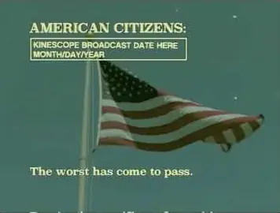
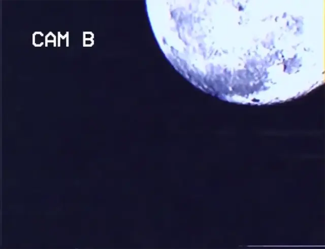
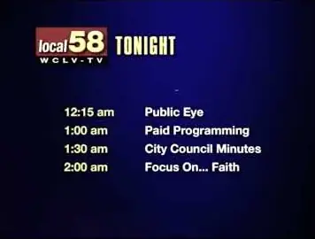
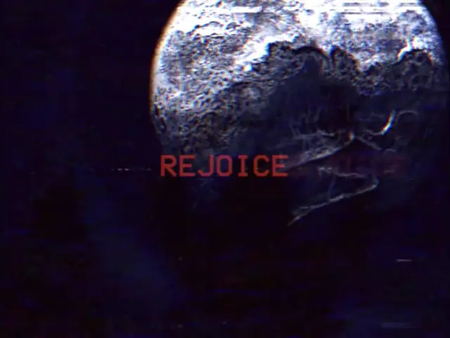
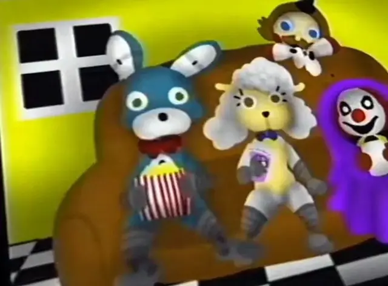
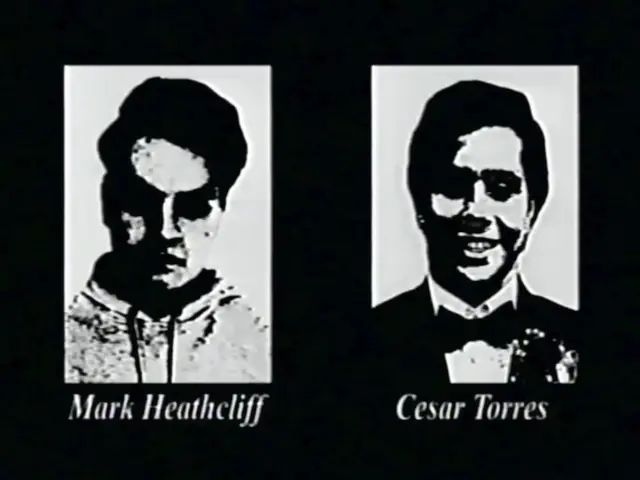
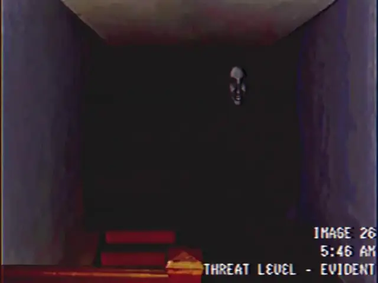
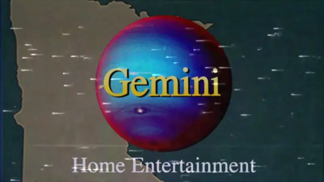
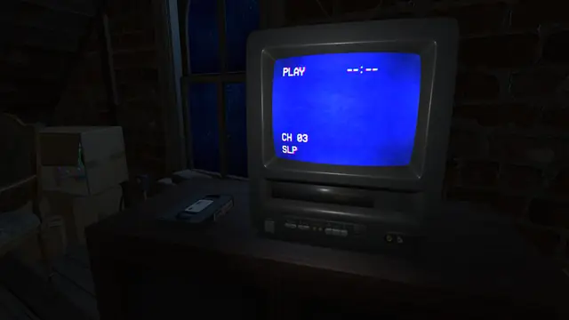
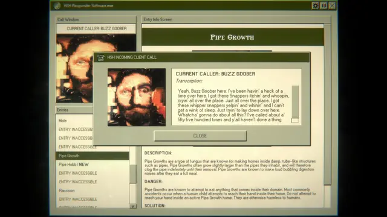
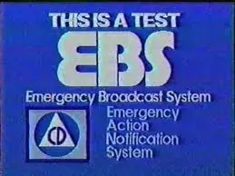
Games
- Andy's Apple Farm
Presented as a long-lost PC game from the late 1980s to mid-1990s, so its glitches feel believable.11
- Amanda the Adventurer
Tapes of a children's show in an attic, where Amanda and Wooly know you are watching.12
- Home Safety Hotline
A 1990s desktop, CRT filter and all, as the whole horror interface.20
- No Players Online
Study how it moves the idea to an abandoned online shooter on a fake 1990s desktop.23
Film, art and more
- Local 58
Kris Straub's hijacked station and the first series to call itself analog horror.8 Start here.
- Candle Cove
Forum posts about a children's show that several people half-remember.6
- Gemini Home Entertainment
Remy Abode's anthology of educational tapes and commercials from a fictional VHS distributor.3 He edits it and adds the VHS effects in the free Hitfilm Express.3
- The Walten Files
Martin Walls' found tapes from a company with something to hide.24
- The Mandela Catalogue
Alex Kister's doppelganger story, told in grainy found footage and instructional videos.10
- Ghostwatch
The BBC drama in which Michael Parkinson, playing himself, hosts a television hunt for a ghost. Sam Moore sees the genre's genesis in it.15
Sources
- 1The Surprising Folklore of Analog Horror
- 2There Are Other Receivers: The Dark Road of Local 58
- 3Ghosts in the Machine: Archiving the End of the World with “Gemini Home Entertainment”
- 4Kinterview :: Candle Cove Creator Kris Straub
- 5Ghosts in the Machine: Trick-Editing, Time Loops, and Terror in “No Through Road”
- 6“Channel Zero”: Here’s the Original Candle Cove Creepypasta
- 7Emergency Alert systems and affective historical sound in analog horror
- 8What Is Analog Horror? The True Meaning Of Skinamarink’s Subgenre
- 9Ghosts in the Machine: Examining the Origins of Analog Horror in “CH/SS”
- 10Ghosts in the Machine: The Fearful Symmetry of Alex Kister’s “The Mandela Catalogue”
- 11What’s The Deal With Analog Horror Games?
- 12Amanda the Adventurer review
- 13Analysis of Analog Horror and its Relationship to Horror of the Past
- 14Everything there is to know about the analog horror genre
- 15‘LOCAL58’ And The Birth of Analog Horror
- 16OpenFX Plugin
- 17Display Action / Title Safe Zones
- 18ntsc-rs
- 19Frequently Asked Questions
- 20Home Safety Hotline Review: As Unsettling as Real Customer Service
- 2147 CFR 11.31: EAS protocol
- 22Enforcement Advisory No. 2013-7: False, Fraudulent or Unauthorized Use of the Emergency Alert System Attention Signal and Codes is Strictly Prohibited
- 23No Players Online on Steam
- 24Ghosts in the Machine: An Introduction to Analog Horror